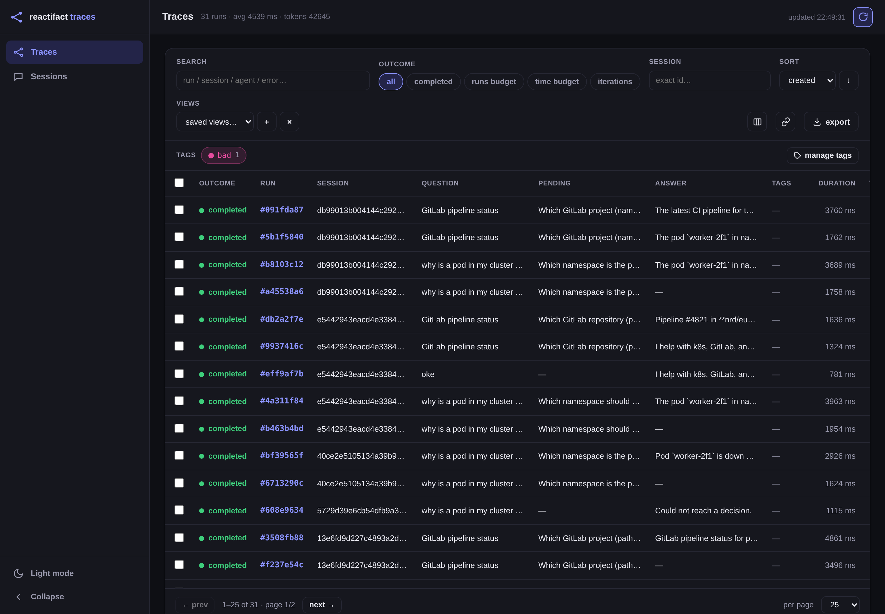
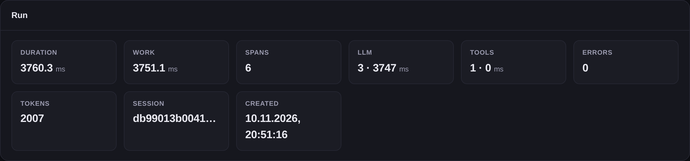
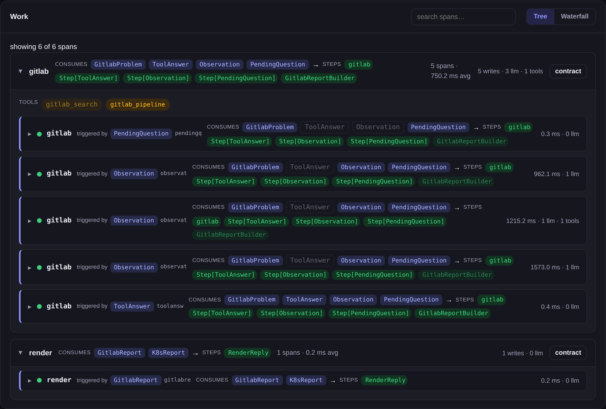
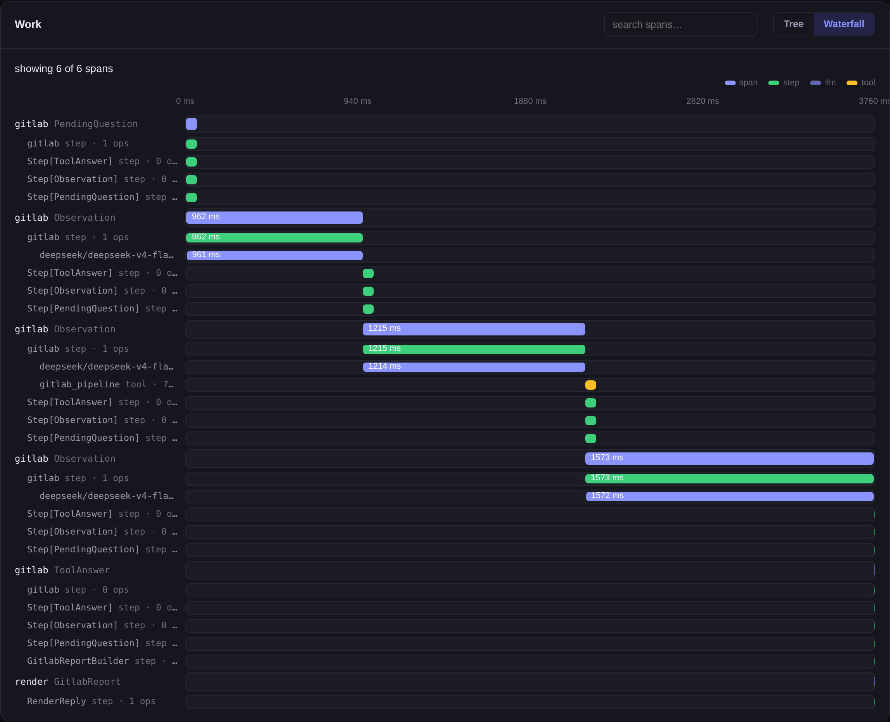
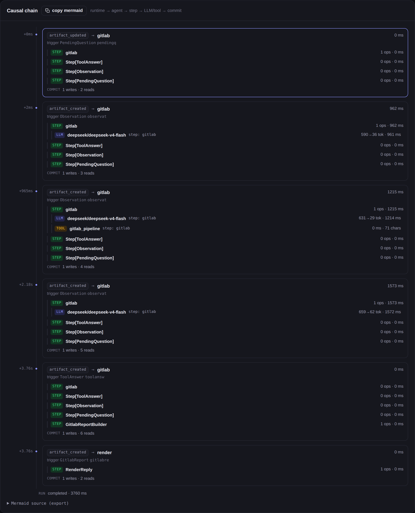

Наблюдаемость¶
Каждый запуск фиксирует трейс. Трейсы наблюдаемы по умолчанию: демо-дашборды работают офлайн без внешних сервисов, а трейсы дополнительно можно отправлять в Langfuse или Postgres.
Что содержит трейс¶
RunTrace — один запуск runtime (до завершения astream/run):
- Спаны агентов (
AgentSpan) — что делал каждый агент: чтения и записи артефактов, суммарные ключ/значение патча, который он произвёл, тип-потребитель, разбудивший агента (event_artifact_type), какие шаги реально отработали (produces: имя, число операций, задержка) и какие инструменты он вызвал (tools:ToolRunимя/produce/задержка/статус/ размер/output — аргументы opt-in, output усекается/редактируется политикой трейса). Дашборд, OTLP (reactifact.tracing) и Langfuse (langfuse.observation.metadata.tools) несут тот же список; Langfuse/OTLP дополнительно дают child-span на каждый тул, размещённый поToolRun.started_at(параллельные вызовы перекрываются). Аргументы по умолчанию не пишутся — включитеRuntimeResources(record_tool_args=True)(вычищаютсяredactor=).Tool.executeинструментируется на классе, поэтому прямой вызов внутри шага попадает в тот жеtools, что иexecute_tool. - Контракт агента (
AgentContract) — объявленныеconsumes/produces/tools/priorityи конкретныйevent_artifact_id. В Work-view видны отдельные спискиconsumes → produces: элементы, которые объявлены, но не запускались, показаны приглушённо; клик по чипу оставляет только спаны, связанные с этим consume/produce/tool. - LLM-вызовы (
LLMCall) — промпты, ответы (урезанные), расход токенов, задержки и шаг, сделавший вызов (LLMCall.step), поэтому waterfall вкладывает его в этот шаг. - Тайминги и порядок — вся причинная цепочка запуска по порядку. У span'ов
агентов, шагов (
StepRun.started_at), LLM-вызовов (LLMCall.started_at) и инструментов (ToolRun.started_at) есть wall-clock старт, поэтому timeline расставляет параллельную работу и вложенные вызовы без догадок.
Большой run читается постранично: get(span_limit=…, span_offset=…) (по
умолчанию 500) отдаёт span_total/has_more_spans, detail-UI догружает
страницы, а Mermaid строится только по ограниченному окну. Write-time лимиты
(Tracer(limits=TraceLimits(...))) помечают трейс trace_truncated вместо
неограниченного роста. DELETE /api/traces/{id} и
DELETE /api/sessions/{id} (или delete_run/delete_session) удаляют плохой
run или сессию; сама сессия остаётся видимой, пока вы не решите её удалить.
RecordingLLM оборачивает ваш провайдер бесплатно, поэтому трекинг LLM-вызовов
не требует кода — достаточно подключить его при настройке ресурсов.
Хранение и просмотр¶
SQLite-хранилище + веб-дашборд (локально, офлайн)¶
from reactifact.tracing import TraceStore
store = TraceStore("traces.db") # SQLite-приёмник; также отдаёт запуски UI
Интерфейс стореджа — async (export/query/get); SQLite-ядро выполняется в
рабочем потоке, поэтому один и тот же объект работает и в веб-приложении, и в
обычном синхронном коде.
Дашборд — это FastAPI-роутер, монтируемый на ваше приложение:
from reactifact.tracing.web import create_trace_router
app.include_router(create_trace_router(store), prefix="/traces")
Он отдаёт общий app shell (templates/app.css): сворачиваемый sidebar
(Traces / Sessions), /traces (список запусков с фильтрацией), /traces/{id}
(stat-плитки, спаны, чтения, записи, ввод/вывод LLM, тайминги, нативная
causal chain (runtime → agent → step → LLM/tool → commit) и живая
Mermaid-диаграмма граф доказательств — записанные артефакты с рёбрами
провенанса patch.link, §34) и /sessions. Пример devops монтирует этот
роутер и служит эталонным UI.

Открытый запуск начинается с обзора — wall time, work, число спанов, время LLM/tool, ошибки и токены:

У карточки Work два вида. Tree группирует спаны по агентам и показывает
объявленный контракт Consume → Step и то, что реально выполнилось; no-op
шаги приглушены, клик по чипу фильтрует видимые спаны:

Waterfall ставит span → step → LLM/tool на одну временную ось, поэтому
параллельная работа и узкое место по латентности видны сразу:

Branches появляется, когда у запуска есть родитель или дети: показывает
ссылку на родительский run и список дочерних (branch, outcome, duration) из
/api/traces/{id}/children. List API принимает фильтры branch= и
parent_run_id=, а дети отдаются от старых к новым — клиенту не нужно собирать
дерево в памяти.
Causal chain — читаемый вид «почему это произошло»: Runtime → agent на
артефакте-триггере, затем каждый шаг с его LLM/tool-вызовами и коммит. Клик по
событию подсвечивает соответствующий span в Tree/Waterfall:

Переносимые отчёты (без FastAPI)¶
Трейс не привязан к дашборду. RunTrace умеет рендериться сам:
trace = await store.get(run_id)
print(trace.to_text()) # терминал
print(trace.to_markdown()) # PR-комментарий / CI summary
print(trace.to_html()) # один self-contained файл
CLI делает то же и умеет сравнивать запуски:
reactifact trace traces.db <run_id> --format text
reactifact trace traces.db <run_id> --format html --out trace.html
reactifact trace traces.db <run_id> --against <other_id>
Pipeline(traces=True) или traces="traces.db" пишет каждый запуск без ручной
сборки Tracer; result.trace_id и await result.trace() читают его обратно.
Это путь без FastAPI: скрипты, ноутбуки и CI используют тот же trace store.
Retention (диск и аудит)¶
RetentionPolicy управляет тем, что store удаляет:
from reactifact.tracing import RetentionPolicy
store = TraceStore(
"traces.db",
retention=RetentionPolicy(
max_runs=5000, # последние незащищённые запуски
max_age_days=30, # TTL, даже внутри max_runs
keep_failed=True, # не удалять failed/stopped
keep_tags=frozenset({"incident", "bad-prompt"}),
),
)
Политика применяется после каждого export (и по требованию). CLI — ops-путь:
reactifact traces prune traces.db --keep 5000 --days 30 --dry-run
reactifact traces prune traces.db --keep 5000 --days 30 --keep-failed --keep-tag incident
Защищённые запуски (failed, с тегом) не входят в счёт max_runs; store может
быть больше лимита — это осознанно.
Сэмплирование (объём в проде)¶
Tracer(sample=...) применяет tail-sampling до того, как run увидит sink:
from reactifact.tracing import SamplingPolicy, Tracer
tracer = Tracer(
store=store,
sample=SamplingPolicy(
rate=0.01, # 1% успешных запусков
always_on_error=True, # все failed/stopped — всегда
always_if=lambda t: t.duration_ms > 3000,
),
)
Сэмплирование детерминировано по run id: один и тот же запуск стабильно
попадает или не попадает в выборку. rate=1.0 — dev/test, низкий rate +
always_on_error — прод.
Ревью запусков: теги и заметки¶
Дашборд — ещё и поверхность ревью. Посмотрев трейс, вы помечаете запуск
тегом (bad-prompt, hallucination, needs-review, …) и необязательной
заметкой о том, что не так / что менять. Теги живут в хранилище, а не в
runtime — это аннотации, привязанные к run_id после факта, поэтому
иммутабельный трейс, который произвёл runtime, никогда не перезаписывается.
- Список показывает фасеты тегов со счётчиками (клик — фильтр), чипы тегов у каждого запуска, полнотекстовый поиск (run / session / agent / error), сортируемые колонки (клик по заголовку), роллапы токенов и задержек, live-переключатель и экспорт JSON по текущему фильтру. Любой фильтр/тег/ сортировка/страница живут в URL — вид становится ссылкой; дайте ему имя, и он сохранится как saved view.
- Страница sessions (
/sessions) группирует запуски поsession_idс числом запусков, суммарной длительностью, токенами и временем последнего и ведёт в отфильтрованный список трейсов. - На странице запуска есть карточка Review: добавить/снять теги, каждый — с заметкой.
- Tree ↔ Waterfall: работа запуска показывается либо по агентам, либо
иерархическим Gantt-waterfall (
span → step → LLM/tool) со смещением старта и шириной по задержке — сразу видно параллелизм и узкое место по латентности. Клик по событию causal-chain переходит к соответствующему span'у в активном Tree/Waterfall и подсвечивает его. - Поиск по трейсу фильтрует спаны/агентов/текст LLM; copy link, copy JSON и raw-JSON — в один клик.
- Выделите несколько запусков, чтобы пометить или снять тег пакетно.
manage tagsпереименовывает, перекрашивает или удаляет тег во всех запусках.
GET /api/traces?tag=bad-prompt&tag=review&tag_mode=all&q=refund&sort=duration_ms
GET /api/tags # фасеты: name, color, count
POST /api/traces/{id}/tags # {tag, note}
DELETE /api/traces/{id}/tags/{tag}
POST /api/traces/tags # пакетно: {run_ids, tag, note}
POST /api/traces/tags/remove # пакетно: {run_ids, tag}
PATCH /api/tags/{name} # {new_name, color}
DELETE /api/tags/{name}
GET /api/traces/export # полные трейсы по текущему фильтру
GET /api/sessions # запуски по сессиям, с агрегатами
Оба бэкенда реализуют один и тот же annotation API: SQLite держит таблицы
tags/run_tags (создаются и мигрируют автоматически), Postgres зеркалит их
как TEXT/TIMESTAMPTZ с каскадным удалением. Направьте create_trace_router
на любой из них — ревью-воркфлоу ведёт себя одинаково.
Настраиваемые колонки из артефактов¶
Можно добавить в таблицу трейсов колонки со значениями из артефактов запуска — например, вопрос пользователя и финальный ответ:
from reactifact.tracing import TraceColumn
app.include_router(create_trace_router(
store,
columns=[
TraceColumn(label="Question", agent="route", type=UserMsg,
field="text", direction="read"),
TraceColumn(label="Answer", type=ChatReply, field="text"),
],
))
TraceColumn задаёт имя колонки и источник значения: спан какого agent,
тип артефакта type (класс или его имя), direction (read / write /
any) и точечный путь field внутрь данных артефакта. Шаг по списку берёт
первый элемент, если не указан явный индекс: sources.title = sources[0].title,
sources.1.title — второй. Если совпадений несколько, index по умолчанию —
последний. Отсутствующий артефакт, значение по умолчанию — или обрезанный
лимитом JSON — всё падает в default.
scope="session" решает колонку на момент run'а строки: берёт все run'ы
сессии до него включительно (в хронологическом порядке), а не только текущий.
Порядок reads разворачивается, поэтому триггерный артефакт (записанный первым)
считается самым свежим, и index=-1 (по умолчанию) = «последний на этот
момент». Чат — это много ходов, а HITL-уточнение делит один обмен на два run'а
(ход-вопрос и ход-resume): Question = сообщение текущего обмена (видно и на
resume-строке), Answer = последний ответ на этот момент (—, пока его нет).
Колонки считаются на сервере для каждого запуска и приходят в каждом элементе
/api/traces как fields (GET /api/columns отдаёт список label'ов). Дашборд
рисует их в списке (выбор колонок, видимость хранится в браузере) и, на
странице запуска, карточкой Fields — так вопрос/ответ (и HITL-уточнение,
например колонка PendingQuestion) видны и при открытии run'а, а не только в
списке.
Значения берутся из JSON, сохранённого со спаном, и обрезаются
TraceLimits(max_data_chars=…) на трейсере (предпочтительно) или legacy
RuntimeResources(trace_truncate=…) (по умолчанию 1500 символов; None —
без обрезки): поднимите лимит, если нужно достать глубокое/большое поле.
Примеры devops и repair это подключают (Question + Answer, а второй ещё
Stage + pending-HITL Pending).
Langfuse и Postgres как дополнительные приёмники¶
Трейс можно отправлять в несколько мест сразу через CompositeTracer, передаваемый
в Runtime. Tracer — тонкий: on_turn_begin → on_span → on_turn_end
(I/O выполняет только on_turn_end; приёмники экспортируют асинхронно).
from reactifact import Runtime
from reactifact.tracing import LangfuseTracer, PostgresStore, TraceStore
runtime = Runtime(
ctx,
groups=[...],
tracer=[
TraceStore("traces.db"), # локальный дашборд
LangfuseTracer(public_key="...", private_key="...",
host="https://cloud.langfuse.com"),
PostgresStore(dsn="postgresql://…"), # требуется extra pg
],
)
Трейсы доставляются один раз в конце хода (семантика доставки-один-раз); трейсер
Langfuse мапит суммарные чтения/записи в input/output, чтобы таймлайн читался
в их UI; каждый отработавший шаг становится дочерней observation, так что
waterfall показывает шаги Consume → Step. SQLite TraceStore остаётся одним
из источников для веб-дашборда; Postgres зеркалирует ту же схему runs/spans.
И TraceStore, и PostgresStore реализуют TraceReader (async query/get),
поэтому create_trace_router работает и с теми, и с другими: укажите дашборду
PostgresStore(dsn) — и он покажет трейсы из Postgres без локального
SQLite-файла.
OTLPTracer: любой OTLP/HTTP-коллектор¶
LangfuseTracer привязан к Langfuse (собственное пространство атрибутов
langfuse.*). OTLPTracer экспортирует тот же запуск как вендор-нейтральные
спаны — только атрибуты GenAI semantic conventions (gen_ai.*, плюс
пространство reactifact.* для reads/writes/provenance) — в любой
OTLP/HTTP-коллектор: Jaeger, Tempo, Honeycomb, Datadog Agent, локальный
otel-collector, ...
from reactifact.tracing import OTLPTracer
runtime = Runtime(
ctx,
groups=[...],
tracer=OTLPTracer(endpoint="http://localhost:4318/v1/traces"),
)
Без зависимости от opentelemetry-sdk — как и LangfuseTracer, он
отправляет OTLP/HTTP JSON-payload напрямую через httpx (уже core-зависимость),
поэтому не требует установки дополнительного extra. Передайте headers= для
коллектора, требующего авторизацию.
LangSmith принимает OTLP и маппит конвенции gen_ai.*:
OTLPTracer(
endpoint="https://api.smith.langchain.com/otel/v1/traces",
headers={
"x-api-key": os.environ["LANGSMITH_API_KEY"],
"Langsmith-Project": "my-project", # опционально (по умолчанию "default")
},
)
Self-hosted LangSmith: https://<your-host>/api/v1/otel/v1/traces с теми же
заголовками.
SigNoz принимает OTLP/HTTP напрямую — self-hosted без ключа:
# self-hosted
OTLPTracer(endpoint="http://<signoz-host>:4318/v1/traces")
# SigNoz Cloud
OTLPTracer(
endpoint="https://ingest.<region>.signoz.cloud:443/v1/traces",
headers={"signoz-ingestion-key": os.environ["SIGNOZ_INGESTION_KEY"]},
)
То же работает с Jaeger, Tempo, Honeycomb, Datadog и локальным
otel-collector. Чтобы разослать в несколько бэкендов сразу — или
редактировать данные на самом коллекторе — направьте endpoint на
OpenTelemetry Collector; RuntimeResources.redactor уже вырезает текст трейсов
до выхода из процесса.
Метрики (Prometheus)¶
Трейсы отвечают «что было в этом прогоне»; метрики — «как дела у прогонов в
целом», это то, по чему строят алерты. reactifact.metrics не тянет
зависимостей сверх ядра: in-process коллектор, Tracer, который его заполняет,
и /metrics-роутер.
from reactifact.metrics import Metrics, MetricsTracer, create_metrics_router
metrics = Metrics()
runtime = Runtime(ctx, groups=GROUPS, tracer=MetricsTracer(metrics))
app.include_router(create_metrics_router(metrics)) # GET /metrics
На каждый завершённый ход записывается: reactifact_runs_total{outcome},
reactifact_budget_exceeded_total{outcome}, reactifact_agent_runs_total{
agent,status}, reactifact_agent_latency_seconds{agent},
reactifact_llm_calls_total{provider,model,agent},
reactifact_llm_tokens_total{kind,provider,model},
reactifact_llm_errors_total{provider,model},
reactifact_tool_calls_total{tool,status},
reactifact_tool_errors_total{tool},
reactifact_tool_latency_seconds{tool} и — при
MetricsTracer(metrics, pricer=…) — reactifact_llm_cost_total{provider,model}.
Прямо из reads/writes/edges спана получаются околодоменные счётчики без кода
приложения — reactifact_artifacts_written_total{type,op},
reactifact_artifacts_read_total{type}, reactifact_relations_total{relation} —
то есть какие бы типы артефактов и связи приложение ни использовало (напр.
пара Answer/Evidence и supported_by), они появляются сами.
Для сигналов приложения (маршрут, отказ, источник) пишите их из шага через
RuntimeResources.metrics — это no-op sink, пока не сконфигурирован, поэтому
проверять на None не нужно:
metrics = Metrics()
runtime = Runtime(
Context(resources=RuntimeResources(metrics=metrics)),
groups=GROUPS,
tracer=MetricsTracer(metrics),
)
# внутри шага, в точке решения:
call.context.resources.metrics.increment("route_total", route=route)
call.context.resources.metrics.observe("docs_found", len(docs), source=source)
Metrics.render() выдаёт Prometheus text exposition напрямую (без
prometheus_client), поэтому create_metrics_router просто отдаёт его;
MetricsTracer также композируется с приёмниками
(tracer=[TraceStore(…), MetricsTracer(metrics)]). Как и в трейсах, спаны эмитят только
меняющие состояние агенты, поэтому settle-поколение не считается.
Модель эмиссии¶
- Спаны эмитят только меняющие состояние агенты (чистый read/verify-шаг ничего не эмитит — меньше шума).
- Один
TracerнаCompositeTracer: отдавайте один композит нескольким приёмникам. on_turn_end— единая точка доставки: новыйastream/arunпродвигает id запуска (повтор считается новым запуском), и трейс каждого хода финализируется один раз.
Live-хуки жизненного цикла¶
Готовый RunTrace — источник истины, но UI часто нужно показывать работу пока
она идёт. У Tracer есть необязательные sync-хуки (best-effort):
class LiveTracer(Tracer):
def on_agent_start(self, agent, event, reads): ...
def on_agent_retry(self, agent, attempt, error): ...
def on_tool_start(self, tool, args): ... # args отредактирован или None
def on_tool_end(self, run): ... # ToolRun
def on_commit(self, commit): ... # после применения patch
Они вызываются рядом с on_turn_begin/on_span/on_turn_end. Держите их
неблокирующими (положите в bounded queue, I/O — отдельно): исключение в хуке
логируется и проглатывается, наблюдаемость не должна ронять запуск.
Streaming-вызовы LLM¶
RecordingLLM записывает и complete(), и stream(). Streamed-вызов
записывается один раз, после конца (или закрытия) потока: склеенный текст,
терминальный usage и ошибка; ответ клипается до trace_truncate (по умолчанию
1500). Оверхед на чанк — один async-generator frame, без записи на каждый токен.
Типизированные события (astream_events)¶
Runtime.astream() — legacy-поток статусов (ProgressEvent: run start, текст
статуса, run end). Для живого UI/Studio используйте astream_events: он отдаёт
типизированные RunEvent и выбирает нужное через режимы:
async for event in runtime.astream_events(
stream_mode=["debug", "updates", "values", "messages"]
):
match event:
case AgentStart(agent=name): ...
case ArtifactWrite(writes=writes): ...
case LLMDelta(delta=text): ...
case RunEnd(outcome=outcome): ...
| режим | события |
|---|---|
custom |
CustomEvent — Context.announce(...) |
updates |
ArtifactWrite после каждого закоммиченного patch |
values |
Values — дифф контекста после коммита |
debug |
GenerationStart, AgentStart, AgentRetry, AgentEnd, ToolStart, ToolEnd |
messages |
LLMDelta-чанки (streamed, или один финальный delta для complete()) |
RunStart, RunEnd и RunFailed эмитятся всегда; упавший run отдаёт
RunFailed и затем пробрасывает исходное исключение. События best-effort:
внутренняя очередь ограничена и дропает самый старый элемент, а не
back-pressure’ит runtime.
Scope и metadata запуска¶
Общий trace store может обслуживать несколько workspace. Проставляйте scope на runtime или на запрос:
Runtime(..., trace_scope="workspace-42")
# или на ход:
await runtime.arun(request={
"workspace_id": "workspace-42",
"trace_metadata": {"user_id": "u1", "agent_version": "v3"},
})
RunTrace.scope и RunTrace.metadata сохраняются вместе с запуском;
store.query(scope="workspace-42") и store.sessions(scope=...) фильтруют по
нему (в API дашборда — ?scope=). trace_scope побеждает
request["workspace_id"].
Логи¶
reactifact пишет структурные коррелированные логи в пространстве логгеров
reactifact.* и молчит, пока его не включат (библиотека не настраивает корневой
логгер):
import sys
from reactifact import configure_logging
configure_logging() # INFO, человекочитаемо, в stderr
configure_logging(json=True) # по одному JSON-объекту на строку
configure_logging(level="DEBUG", stream=sys.stderr)
Каждая строка несёт поля корреляции хода — run_id, session_id,
generation, agent и request_id из runtime.arun(request=…) — так строка
привязывается к конкретному прогону/агенту. Свои поля добавляйте через
bind(...):
from reactifact import bind, get_logger
log = get_logger(__name__)
with bind(tenant="acme", user="bob"):
log.info("handling request")
Уровни: run started / run finished и action dispatched — INFO; завершение
генерации и агента — DEBUG, а упавший агент или неудачный dispatch —
WARNING. Логи — это метаданные: данные артефактов и содержимое промптов в
них не попадают. Логи дополняют трейсинг: RunTrace — durable-аудит прогона, а
эти логи оператор смотрит в реальном времени.
Трассировка никогда не роняет запуск¶
Наблюдаемость best-effort по контракту. Недоступный приёмник (Langfuse лёг,
Postgres отказывает в соединении), падающий колбэк кастомного Tracer или
битый payload трейса перехватывается, логируется предупреждением и
пропускается — бизнес-запуск завершается нормально, а следующий ход
трассируется как обычно. Если настроено несколько приёмников или трейсеров,
падение одного никогда не мешает остальным получить трейс. Потеря
наблюдаемости не должна означать потерю запуска, который она лишь
обслуживала.
Редактирование чувствительных данных¶
Трейсы покидают процесс (SQLite, Postgres, Langfuse, дашборд, строка лога);
рабочий Context — и, при сохранении сессии, возобновляемый диалог — нет.
Укажите redactor= на RuntimeResources, чтобы вычищать текст, который
уходит: data артефактов, messages/response LLM-вызовов и error
спанов/LLM. Живое состояние и сохранённые сессии намеренно не
редактируются — маскировка рабочей копии сломала бы диалог, который должен
возобновляться.
from reactifact import RuntimeResources
from reactifact.redaction import RegexRedactor
resources = RuntimeResources(llm=from_env(), redactor=RegexRedactor())
Встроенный RegexRedactor намеренно консервативен — email, US SSN, IBAN,
Bearer-токены и api-ключи вида sk-… — чтобы никогда не замаскировать
законную финансовую цифру; передавайте patterns=[(name, regex), …] для своих
форматов (карты, телефоны, …). Подойдёт любой объект с методом
redact(text: str) -> str, так что PII-сервис подключается без наследования.
None (по умолчанию) оставляет трейсы байт-в-байт как раньше.
Наблюдения тулов — это не текст трейса: они уходят обратно в промпт модели.
Если инструменты могут вернуть секреты, передайте redact_tool_outputs=True
в recipes.run_tool_loop: тот же resources.redactor применяется до того,
как наблюдение попадёт в LLM и в ToolLoopResult.observations.
События прогресса (реактивность UI)¶
Для анимированных строк «Думаю… / Составляю план… / Считаю смету…» инжектируйте
в шаг progress: Progress и вызывайте его:
async def run(self, question: Artifact[Question], progress: Progress) -> Evidence:
progress("Ищу в документации…")
...
Progress — тонкая обёртка над Context.announce(message, kind=..., **payload):
оба публикуют ProgressEvent на EventHub, который runtime отдаёт в SSE-поток.
Context.announce остаётся для кода, у которого уже есть Context (серверы,
диспетчеры, рецепты); шагу, которому нужно только объявить статус, лучше
принимать Progress, а не весь Context.
async for event in runtime.astream():
if event.kind == "status":
yield sse("status", {"message": event.message})
announce — не лог, а первоклассный канал UI, который web-демо потребляют
буквально.